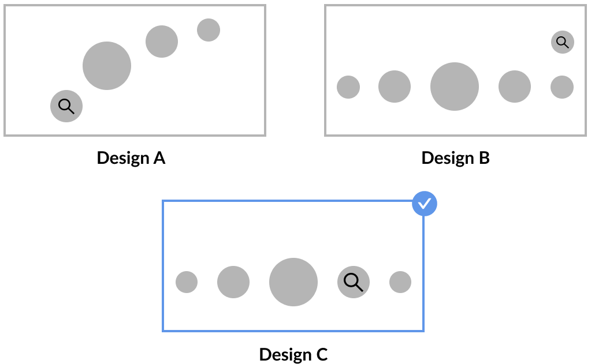
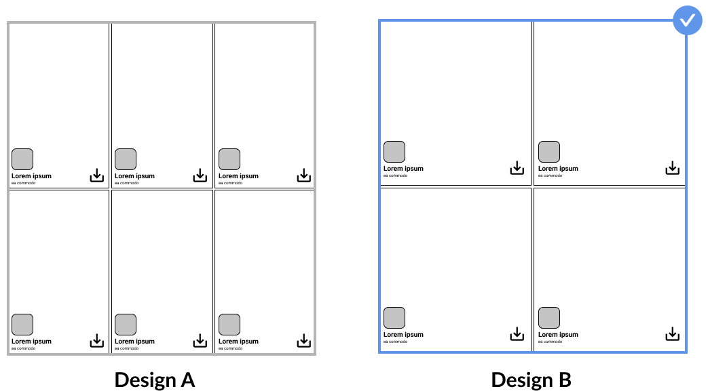
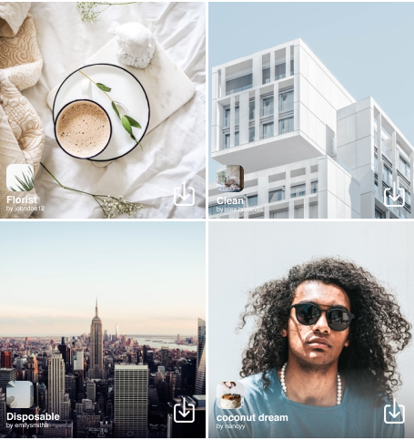
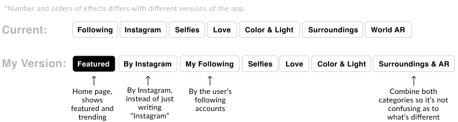

Redesign
Problem 1: Low discoverability of effects gallery
Where the effect gallery is currently located has low discoverability. It's hard to get to and some users don't even know a library exists.

Design A only displays 4 buttons and "looks like" it takes up more screen space.Design B wouldn't work because it clashes with the "cross" that comes up when users are scrolling through different effects. Also, when an effect has multiple versions, they come up there.
Solution
I decided that Design C is the best solution. It relocates the effect gallery next to home and it doesn't make unnecessary changes, so the users won't be confused and solves the problem of easy access and higher discoverability.
Problem 2: Poor system and user intuitiveness for browsing effects
The current gallery displays 4 effects in one screenview and users have to go into the effect to save the effect.

Solution

I chose design B over design A because it has 2 columns instead of 3. It displays the thumbnails with a shorter height, but still enough for the users to view each effects properly. This reduces the amount of actions needed by the users. The use of 3 columns in design A are too clusted for the screen. Although displays more effects in one viewing, makes it harder to properly view each effect's thumbnail.
A save button is added to the bottom right on each thumbnail for users to save them faster.

I also renamed categories because the current names are quite unclear and vague. Users are often confused as to what each category name means.